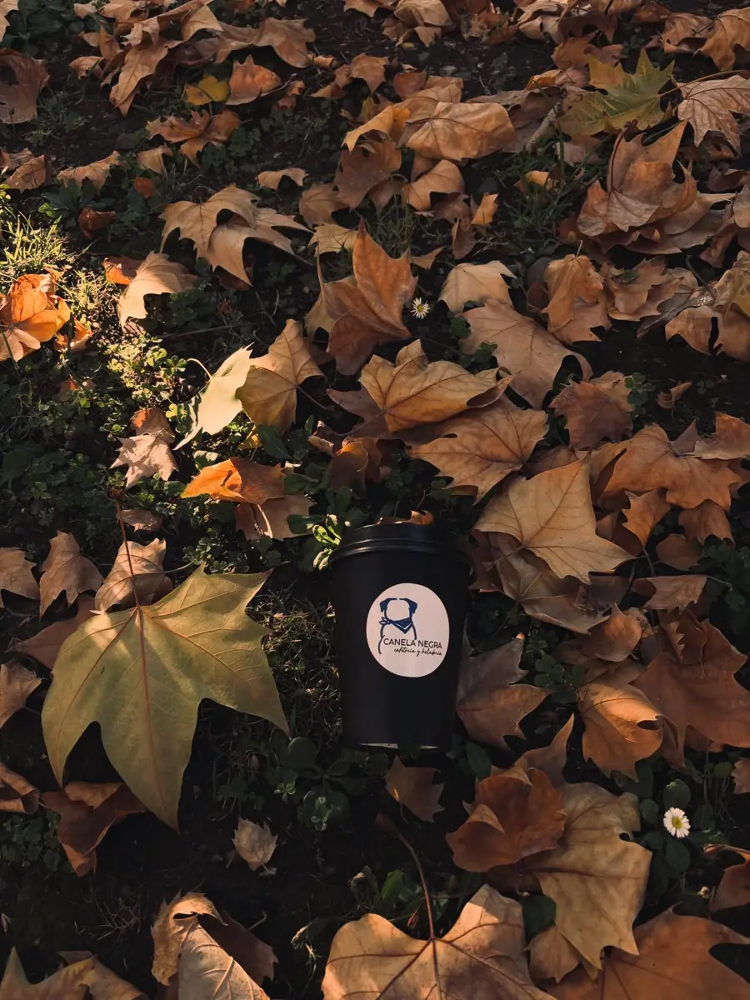
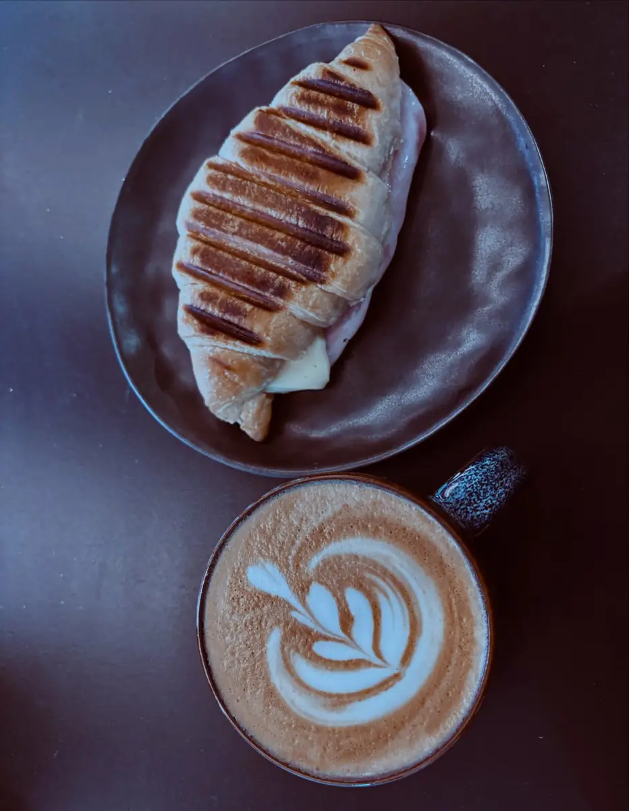
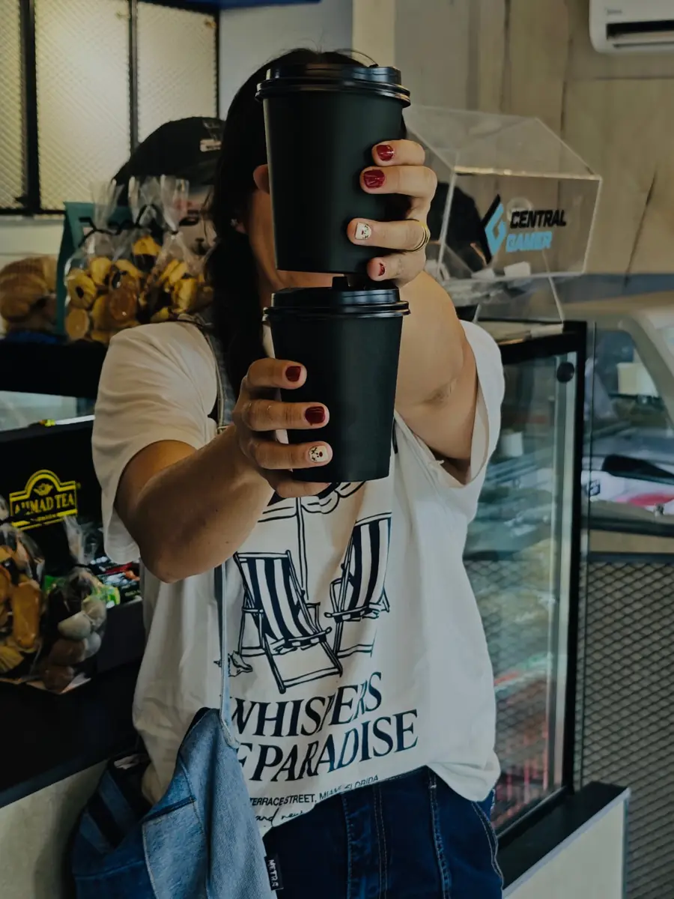
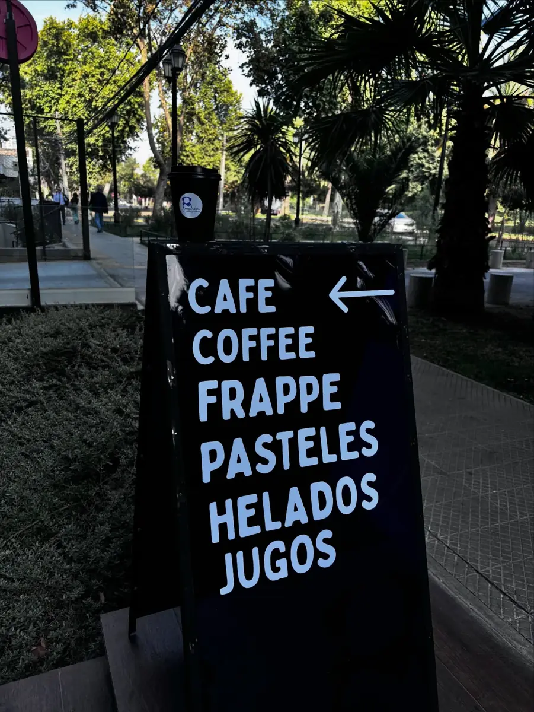
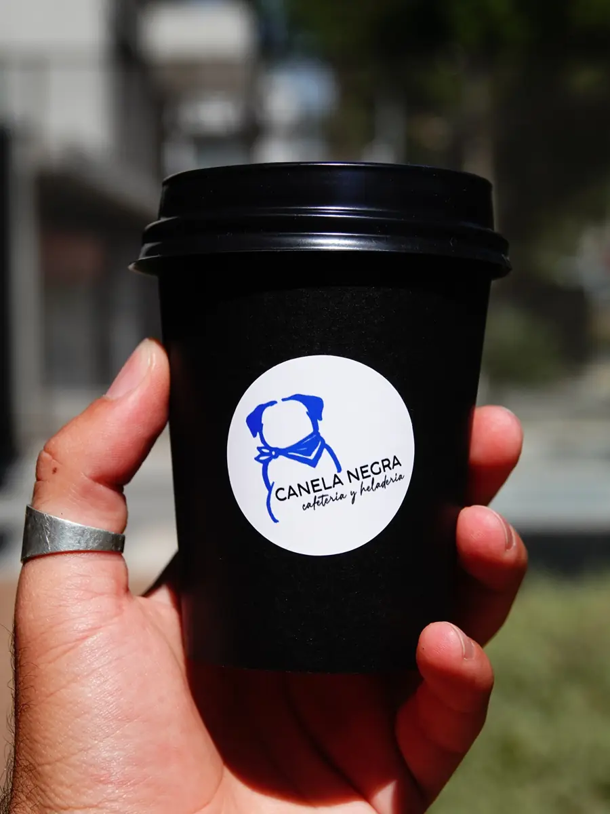
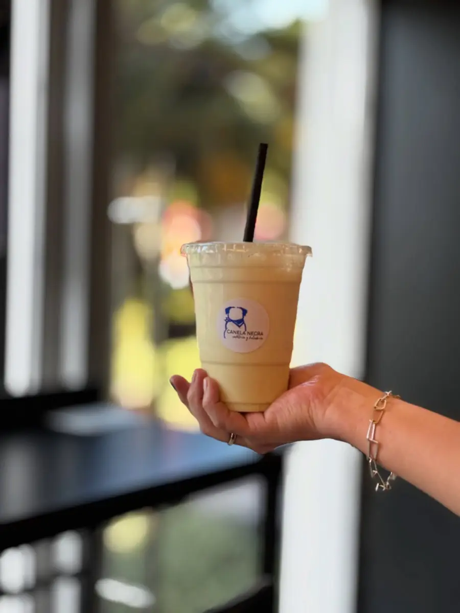
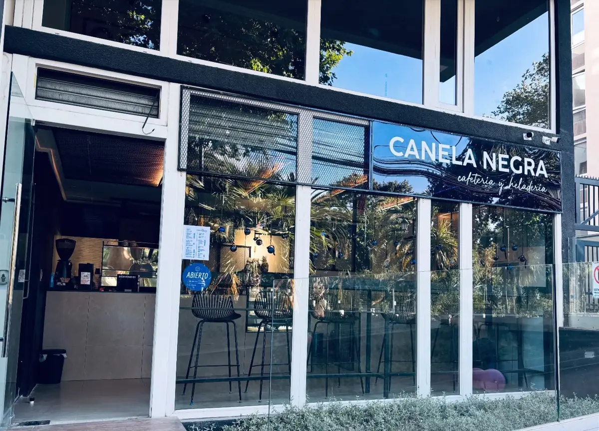
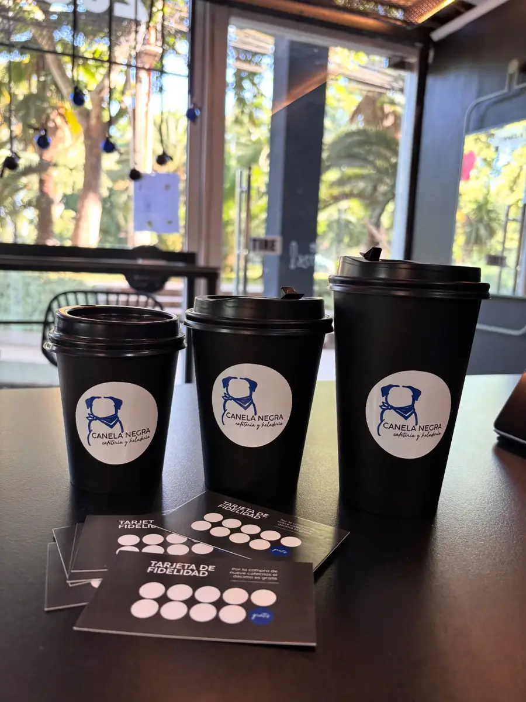

Tu pausa favorita.
Café de especialidad, pasteles, opciones saladas, jugos y helados frente al Parque O'Higgins, a pasos del Metro Rondizzoni.
Nuestra carta
Productos y precios de ejemplo: los reemplazamos por la carta real.
¿Por qué Canela Negra?
Lo que ya dicen de nosotros quienes nos visitan.
Café de especialidad
Granos caturra de altura de Colombia, en espresso, capuchino y más.
Pausa frente al parque
Ambiente acogedor, buena música y vista al Parque O'Higgins.
Helados y pastelería
Tortas, pastelitos y helados, con opciones sin azúcar.
Así se vive Canela Negra
Fotos de nuestro Instagram @canelanegra_cafe







Nosotros
Somos una cafetería y heladería frente al Parque O'Higgins. Acercamos calidez, atención, calidad y vida al parque: café de especialidad, cosas ricas dulces y saladas, y un lugar donde tu mascota también es bienvenida.
Foto del equipo pendiente
Tu tarjeta de fidelidad, ahora en tu celular
Junta 10 stickers y llévate un capuchino o americano gratis. Sin tarjetas que se pierden: solo tu RUT.

Visítanos
Av. Rondizzoni 2036, Local #1, Santiago · a pasos del Metro Rondizzoni
Horario
| Lunes a viernes | 8:30 – 21:00 |
| Sábado y domingo | 10:15 – 21:00 |
| Pausa todos los días | 15:00 – 16:00 |
Horario publicado en su Instagram.